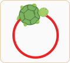

переміститись на 5 кроків вперед
повернути праворуч на 10 градусів
чекати протягом 1 тику (1/10 частини секунди)
10 тиків = 1 секунда
переміститись на 5 кроків вперед
повернути праворуч на 10 градусів
чекати протягом 1 тику (1/10 частини секунди)